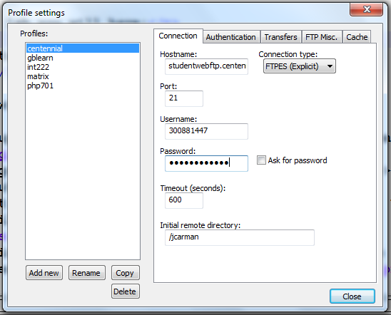

Lab 4 - Introduction to HTML5
Overview
This week's lab will cover the following:
- Identifing the basic elements of a simple web page.
- Describing HTML syntax, tags, attributes and values.
- Entering and Formatting Text.
- Previewing Site Content in a Browser.
- Posting a web page to your web server.
Verifing Your Connection With FileZilla
Before you begin, verify you can connect to your server with FileZilla. If you can't connect, skip this next section ("Configuring Notepad++ with ftp access"), and continue from "Creating your first web page" onwards.
Configuring Notepad++ with ftp access
Tip: If you're installing in a Windows 7 environment, use the 32 bit version. For Windows 10, use the 64 bit version. The ftp plugin won't work in the other versions.- If you're setting up Notepad++ at home, Download and install it from the notepad++ website
- Open Notepad++ by going to the Windows start menu > All Programs > Notepad++ and selecting the executable.
- Download the ftp plugin (nppftp) apprpriate for the verson of Notepad++ you installed (x86 for 32 bit, x64 for 64 bit).
- Extract the zip file, by right clicking on it in the windows file explorer.
- In Notepad++ go to Settings > Import > Import Plugin and select the .dll in the folder you've unzipped (it should be in a sub folder called "bin")
- Close Notepad++ & re-open it.
- Go to Plugins > NppFTP > Show NppFTP Window
- Click the icon that looks like a gear and select Profile settings. Your screen should look similar to the following.
 - Click "create new connection" and name your profile whatever you wish (Centennial College seems sensible).
- Enter the following information in the Connection tab
- Hostname: studentwebftp.centennialcollege.ca
- Port: 21
- Protocol Type: FTPES
- Username: yourstudentnumber
- Password: the password you use to log into the lab PC
- Initial remote directory: /thefirstpartofyourcentennialemailaddress
- Click the left most icon in the NppFTP window (that looks like a cable) and select the connection you just added from the dropdown menu.
Creating your first web page
Before creating your first web page, it's best to lay out the required structural tags (an example follows). You can then fill in the rest of the data using this simple template. Remember, a web page is everything that exists between the opening and closing html tags (<html> and </html> respectively). It consists of two main parts:
- The head, consisting of everything between the head tags (<head> and </head> respectively). This section contains information about the document, and won't appear on the page itself.
- The body, consisting of everything between the body tags (<body> and </body>). This section contains the document itself, everything in here will appear as your web page.
<html> <head> </head> <body> </body> </html>
Create a new file named index.html and fill in the structure using the above sample. This is the file you'll be editing for the rest of the lab.
The document type declaration
Add the doctype
The document type declaration tells the browser what type of document to expect. There are many different doctypes, however for this course we will be using the one for HTML5. Add the following to your webpage above the opening HTML tag (the doctype declaration must be the first thing in your document).
<!DOCTYPE html>
W3Schools has some useful information on the different doctypes and their uses.
Filling in the head
Add a title
Add the title of "Lab 1" (without the quotes) to the header section of your document.
<title>Lab 1</title>
Add some meta tags
Meta tags provide additional information about our page. These include what character encoding you're using, and data used by search engines to index your page.
Using the meta tag, define the character set as "UTF-8" (Unicode). This tag defines metadata about the document, and can contain many attributes. We will use several of them over the duration of this course.
<meta charset="utf-8">
Use the meta tag to add author information to your web page (with the content of your name). An example follows.
<meta name="author" content="Linus Torvalds">
The header can contain many other things such as embedded or external links to CSS or JavaScript, which we will visit later.
Filling in the body
Add a heading
Headings when done properly should be used in number of importance, with 1 being most important and 2-6 used for sub-headings in order of descending importance.
Insert the follwing using an H1 tag:
<h1>Your Name CNET204 Page</h1>
Add a paragraph
Using the paragraph tag (<p> to open and </p> to close), add a paragraph below your heading about what you hope to learn from this course.
Comments
The comment tag can be extremely useful when you're first learning HTML, or when you have a large block of code and want to clearly define where it begins and ends. Comments can make your code easier to read and understand, either by someone else or yourself after quite a bit of time has passed. Comments are not used as frequently in HTML as they are in other languages. To add a comment you require an opening (<!--) and closing (-->) tag. A sample follows below, please feel free to include comments in your labs whenever you encounter something that may be useful to remembering what you've learned later.
<!-- This is a comment, it's contents will only appear when you view the page source through the browser. Comments in HTML can span multiple lines. This is not always true of comments in a other languages, and some can even have a variety of methods for designating a comment -->
To do:
Using what you learned about comments above, add a comment indicating your name and student number as the first line of the body.
Completing the Lab
To view your page, use the following URL (substituting your information where appropriate). studentweb.cencol.ca/firstpartofemail
Your page should look similar to the following output. If it does not, go back and complete whatever you've missed.

Upon completion of this lab you should have a simple web page using several tags we talked about in our first lecture. Your page should validate using the w3schools html validator. The following questions are for furthering your knowledge only, and may appear on quizzes or tests at any time later in this course.
Exploration Questions
- What does html stand for?
- What are the two main parts of a web page?
- What sort of things appear in the header? Which two did we use in this assignment?
- What sort of things appear in the body? Which two did we use in this assignment?
- What is the range of heading tags? Which is the biggest? The smallest?
- How do you access your assignments (on the web server) in the browser?